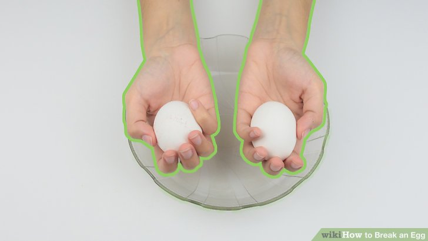

Cracking a Single Egg
Step 1 Hold the egg in your dominant hand.
Hold the egg in your dominant hand. It's best to use your dominate hand when cracking an egg. Grasp the egg firmly in your hand so the long side is facing downward. There is no exact way to hold the egg. Simply hold it in whatever fashion is comfortable for you.[1]
Step 2 Tap the egg on a firm surface.
Watermark wikiHow to Break an Egg
Tap the egg on a firm surface. Do not tap the egg on the side of a bowl or dish as the shell may shatter and get into the bowl. Instead, give the long side a few firm taps on a hard, flat surface. Your kitchen counter should work fine.[2]
Step 3 Find the indentation of the egg.
Find the indentation of the egg. Turn the egg over to look at the crack you made. There should be a sideways crack running down the egg and a small indentation near the center of the crack.[3]
Step 4 Pull the shell apart.
Watermark wikiHow to Break an Egg
Pull the shell apart. Press your thumbs against the indentation on the egg. Secure the rest of the egg with your remaining fingers. Holding the egg over a bowl, gently pull the egg apart to release the shell into the bowl.[4]

ที่มา
HOME